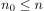
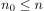
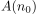
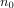
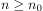
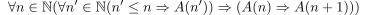

Proof by strong induction
1. Theorem
Sei  für beliebiges
für beliebiges  eine Aussage
Dann lässt sich durch folgende zwei Schritte die Gültigkeit der Aussage für mit  zeigen
eine Aussage
Dann lässt sich durch folgende zwei Schritte die Gültigkeit der Aussage für mit  zeigen
1.1. Induktionsanfang:
 ist richtig ( meist  )
)
1.2. Induktionsschritt
Für  gilt zu zeigen:

1